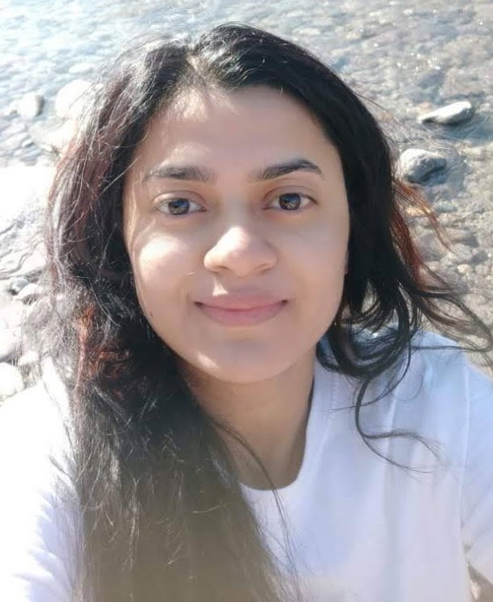
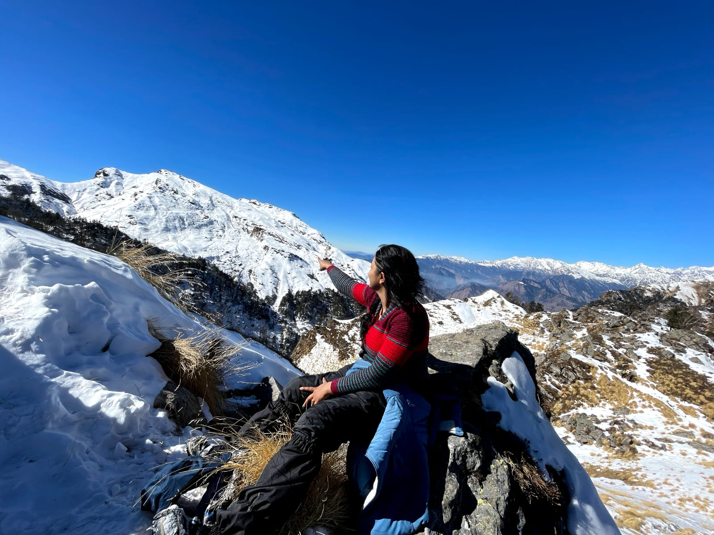

01
Materials synthesis & design
Developing functional materials through controlled synthesis routes and investigating how composition and processing shape material structure and performance.
CHEMICAL ENGINEERING · MATERIALS RESEARCH
I am Richa Ranjan, a Chemical Engineer and researcher interested in materials synthesis, design and characterization, with a focus on environmental applications and pollutant removal.
Research begins with a question:
01 / ABOUT
I am a Chemical Engineer and researcher affiliated with the Department of Chemical Engineering at the Indian Institute of Technology (IIT) Ropar. My research focuses on engineered adsorbents for the removal of industrial dyes and pharmaceutical contaminants from wastewater.
I am committed to collaborative, intellectually stimulating work that encourages continuous learning, knowledge sharing, and professional growth. I approach complex research challenges with patience, perseverance, critical thinking, and a focus on developing meaningful and innovative solutions.
My work combines adsorbent synthesis, electrospinning, cellulose aerogel development, magnetic nanofibrous materials, and material and surface characterization with adsorption performance analysis.
Connect about research collaboration →02 / RESEARCH INTERESTS
Building an understanding of how materials are made, what defines their properties, and how they perform.
Developing functional materials through controlled synthesis routes and investigating how composition and processing shape material structure and performance.
Connecting morphology, porosity, surface chemistry, crystallinity, and surface charge with observed material behaviour.
Studying adsorption kinetics, equilibrium isotherms, and possible interactions at the material–pollutant interface.
Exploring adsorbent materials for removing emerging contaminants and dyes from water, with attention to treatment performance and practical potential.
03 / SELECTED PROJECTS
Examples of research themes connecting material fabrication, chemical understanding, and environmental performance.
Cellulose-based porous materials investigated for the adsorptive removal of ciprofloxacin and methylene blue from contaminated water.
Investigating polymer-based nanofibrous materials and the relationship between material architecture, surface properties, and adsorption performance.
Using characterization results, kinetic models, and equilibrium isotherms to interpret material–pollutant interactions and evaluate adsorption behaviour.
Project summaries are introductory descriptions. Add project dates, collaborators, funding, and verified quantitative results where appropriate.
04 / PUBLICATIONS
Journal articles and manuscripts in materials design, adsorption, and sustainable wastewater treatment.
Journal of Hazardous Materials Advances, 21 (2026), 101015.
Read article / DOI ↗Results in Engineering, 29 (2026), 109799. DOI: 10.1016/j.rineng.2026.109799.
Read article / DOI ↗Results in Chemistry, Volume 31, November 2026, Article 103918. DOI: 10.1016/j.rechem.2026.103918.
Read article / DOI ↗ Open on ScienceDirect ↗Visit Google Scholar for the author profile and available citation information.
05 / EDUCATION & ACHIEVEMENTS
Department of Chemical Engineering, Indian Institute of Technology (IIT) Ropar, India.
Thesis: Engineered Adsorbents for the Adsorptive Removal of Industrial Dye and Pharmaceutical Contaminants from Wastewater.
Supervisor: Dr. Manigandan Sabapathy.
Birla Institute of Technology (BIT) Mesra, Ranchi, India.
Thesis: Inorganic Membrane from Waste: Synthesis and Characterization.
Supervisor: Apurva Sinha.
Dr. KNMIET, Modinagar, Uttar Pradesh, India.
Project: Performance evaluation of liquid fuel from plastic waste generated by pyrolysis.
Supervisor: Dr. Jay Mant Jha.
Financial support from Anusandhan National Research Foundation (ANRF), Government of India, under grant CRG/2022//005880.
Two-year Senior Research Fellowship at IIT Ropar from the Ministry of Education, Government of India.
Travel grant support from the Ministry of Education, Government of India, to present conference papers.
Three-year Junior Research Fellowship at IIT Ropar from the Ministry of Education, Government of India.
Financial support from Tata Steel Research & Development, India.
Recipient for the presentation on cellulose aerogel for pharmaceutical ingredient wastewater treatment at the 4th National Conference on Advances in Chemical Engineering and Science, IISER Bhopal.
06 / PROFESSIONAL EXPERIENCE
Purbi Singhbhum, Jharkhand, India.
Central Institute of Plastics Engineering and Technology, Hajipur, India.
07 / TECHNICAL SKILLS
MATLAB · Python · COMSOL
FE-SEM · Electrospinner (E-spin Super ES-1) · Zetasizer Nano ZSP (DLS) · Optical tensiometer · UV–Vis spectrophotometer · Rheometer (Anton Paar MCR702)
OriginPro 8.5 · LaTeX · MS Office · Visio · Code Composer Studio · MathType · ImageJ · AutoCAD · CATIA V5R19
Adsorbent synthesis · Electrospinning · Cellulose aerogels · Magnetic nanofibrous adsorbents · Adsorption kinetics and isotherms · Material and surface characterization
08 / TEACHING

A little glimpse beyond the laboratory.
09 / PERSONAL PROFILE
My journey in chemical engineering has been shaped by curiosity: a desire to understand how materials are made, why they behave the way they do, and how careful experimentation can turn questions into useful knowledge. Research has taught me to value patience, persistence, and the small discoveries that emerge when we look closely at a problem.
I enjoy continuous learning and exploring ideas beyond my immediate field. I believe that new places, conversations, and perspectives can broaden the way we think, both as researchers and as people. I value collaborative environments where knowledge is shared openly and different experiences help shape better questions.
Outside the laboratory, I enjoy travelling and discovering new places. I am still adding to this personal story, and this section can grow to include other interests, experiences, and moments that have influenced my journey.
BEYOND THE LAB
A personal space to share the things I enjoy, the skills I develop, and the people and experiences that inspire me.

HOBBY / EXPLORATIONTravel & new placesDiscovering landscapes, cultures, and fresh perspectives → PERSONAL GROWTHSkills & creativityA place to showcase practical, creative, or communication skills → PEOPLE & EXPERIENCESMeaningful connectionsCelebrating family, friends, mentors, and shared experiences →Photos and short stories from places I have explored. I can add destinations, favourite moments, and what each journey taught me.
This space can highlight hobbies, creative pursuits, languages, communication, volunteering, or other skills you choose to share.
A thoughtful gallery for selected memories with family, friends, mentors, and collaborators—shared only when everyone involved is comfortable being featured.
09 / CONFERENCES & PROFESSIONAL DEVELOPMENT
Rencontres du Vietnam on Soft Matter, Fluids, Interfaces, ICISE, Quy Nhon, Vietnam, June 9–15, 2024. With Manigandan Sabapathy and Sarang P. Gumfekar.
Presented an oral research presentation.
Participated in the international workshop.
4th National Conference on Advances in Chemical Engineering and Science (ACES 2023), Department of Chemical Engineering, IISER Bhopal. Recipient of Best Presentation Award.
Instructor-led certification course conducted by iHub DivyaSampark, IIT Roorkee, in collaboration with RBPL.
2nd International Conference on Membrane Technologies for Desalination, Energy and Water Sustainability, Department of Hydrology, IIT Roorkee.
Three-day workshop organized by A2Z EduLearningHub LLP.
Poster presented at the International Symposium on Plant Biotechnology Towards Improving Agri-Food Industry and Healthcare Products (ISPB-2021), BIT Mesra, held virtually.
10 / RESEARCH INTERESTS & PERSONAL STRENGTHS
Advanced materials for water and wastewater treatment; adsorption and separation processes; sustainable and bio-based materials; cellulose-based aerogels; electrospun nanofibres; magnetic nanocomposites; emerging contaminants; adsorption kinetics and isotherms; surface engineering; contaminant–adsorbent interactions; and sustainable environmental remediation.
Hindi · English · German
Critical thinking · Problem solving · Quick learning
11 / ACADEMIC REFERENCES
Associate Professor, Department of Chemical Engineering
Assistant Professor, Department of Chemical Engineering
Assistant Professor, Department of Chemical Engineering
GE Aerospace Research, Niskayuna, New York, USA
Contact details available upon request.
Confirm that each referee has agreed to have their details published publicly before making this section live.
06 / CONTACT
Open to meaningful scientific conversations, interdisciplinary collaborations, and suitable academic opportunities.
PROFESSIONAL CONTACT
For professional enquiries, research discussions, and collaboration opportunities.
Emailrricha1994@gmail.com ↗ Google ScholarView publications ↗ ORCIDFind profile ↗ LinkedInFind profile ↗Phone: +91-9058541491 · Based in India. Add verified LinkedIn, ORCID, ResearchGate, and Scopus profile URLs when available.